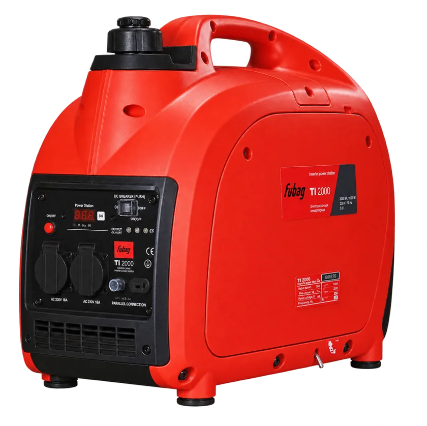

Пример стоимости аренды

Инверторный генератор FUBAG TI 2000
От 750 ₽ / сутки
Для работы без электросети. Тариф зависит от срока аренды; актуальную цену и характеристики смотрите в карточке товара.
Посмотреть генератор и тарифыНаличие на нужные даты подтвердит менеджер.